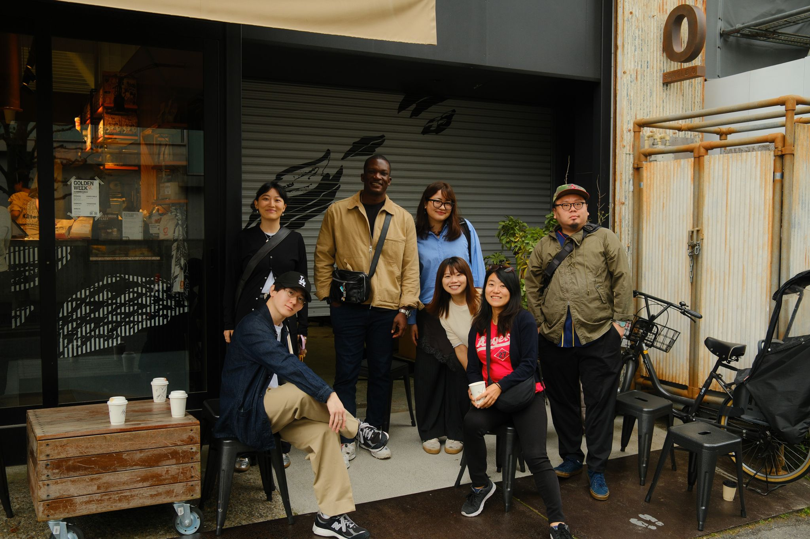
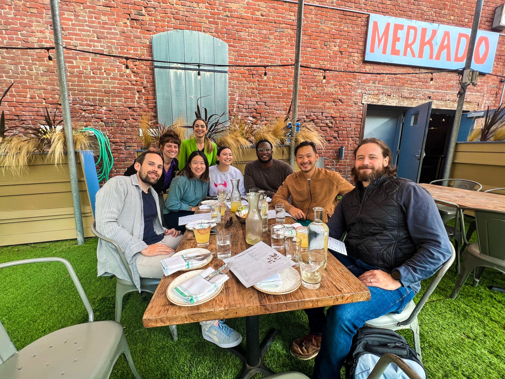
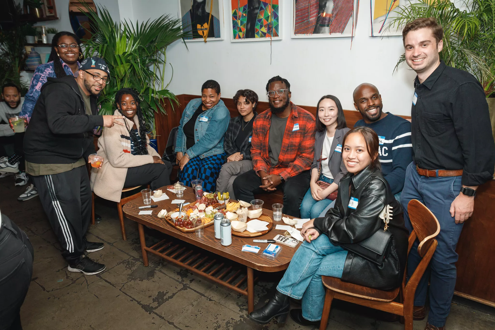
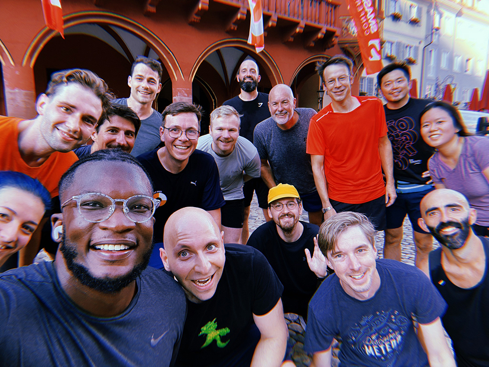

Design leader. Builder.
Community maker.
I've spent over a decade leading design teams at companies like LinkedIn and Zendesk — scaling organizations, shaping product strategy, and shipping experiences used by more than a billion people.
Get in touch →What I'm about
I believe that if you want to create something of quality that positively impacts people, your actions, values, and work ethic have to reflect that goal.
That belief has shaped everything — from growing LinkedIn's Marketing Solutions design team from 6 to 26, to building Facilitator, a FigJam tool used by over a thousand facilitators, to launching LeadCraft, a platform for design leaders navigating an era where everything is changing.
I don't just lead teams. I build things.
Read more →Select work
A few case studies in design leadership and the products I've built — the problems, the bets, and what shipped.
Case studies
Leadership
Projects
Community
I speak at conferences around the world about facilitation, design leadership, building teams through change, and AI readiness. My talks draw from real stories — the messy, imperfect, human side of leading design organizations.





Talks
Figma Config 2025 — "The Design IRL: Facilitating Safe and Inclusive Environments for Feedback"
Design Matters Tokyo 2025 — "How AI Is Reshaping Design Leadership and Culture"
Writing
Events
SmashingConf New York 2025
SmashingConf Freiburg 2025
Config US 2025
Let's work together
I'm available for speaking engagements, leadership coaching, and advisory work with product and design teams.